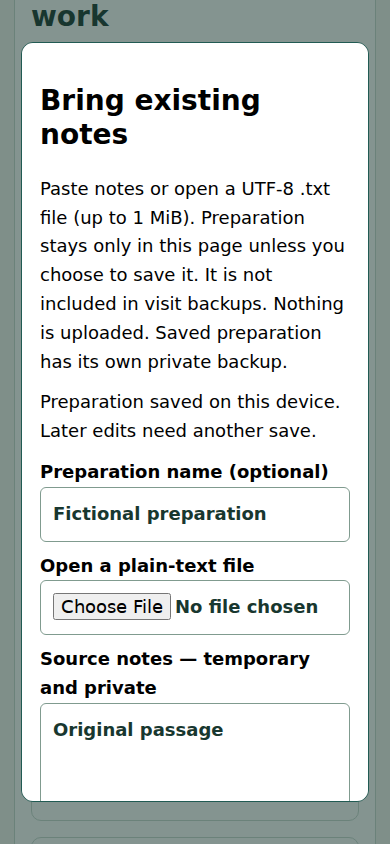
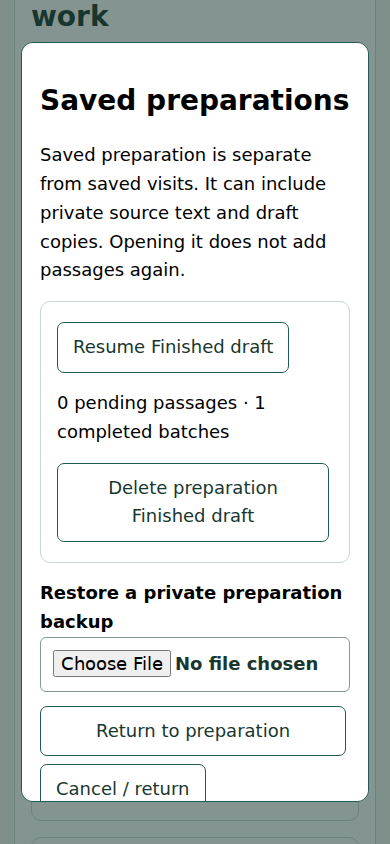
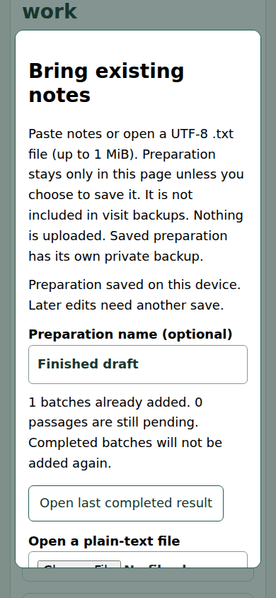

1 / 12
The decision
Let someone deliberately save unfinished preparation, leave, and return to the same work. Keep their source text, edited passages and intended destination together. Do not make them repeat an addition just because the browser closed.
This extends My Visit Notes. It does not introduce accounts, cloud storage, reminders or automatic interpretation.
2 / 12
The gap in the previous release
The previous version could turn chosen passages into visit notes, but unfinished preparation lived only in the open page. A source-text download kept the original source, not edits made to the selected passages. A visit backup protected the visit, not this working area.
That was a known software limit. The new feature addresses it. We have not established how often people encounter this problem or whether they prefer this solution to ordinary notes.
3 / 12
A small example, from start to finish
A fictional person selects two questions from their notes, changes the wording of one, and leaves the other unfinished. They name the preparation “Next week” and choose to save it.
Later they reopen it offline. Their wording and unfinished choice are still there. They finish editing, review the destination and confirm additions.
If the browser closes immediately afterward, they can reopen the completed result. The same questions are not added a second time.
4 / 12
Saving is an explicit choice
Opening preparation, typing and selecting do not save it. Save this preparation on this device explains that the copy includes private source, edited choices and any retained draft context.
Later edits require another explicit save. The status distinguishes temporary work, saved preparation and changes that have not been saved. A failed write never earns a saved message.

5 / 12
Return to the same work
Saved preparations lists names, pending passage counts and completed-batch counts without displaying private source text. Multiple preparations can be kept separately.
Resuming restores source, edited passages, types and destination. Empty items still being edited are preserved. Replacing unsaved preparation asks first.

6 / 12
Keep the intended destination
| Destination | What happens on return |
|---|---|
| A saved visit | The same visit is found by its identity. If it changed, review uses its latest content. If it was deleted, choose another destination. |
| A temporary draft | A copy kept with preparation remains available. Opening it asks before replacing open visit work. |
| A new visit | Confirmation creates a new temporary result. Keeping preparation does not separately save that visit. |
Opening another visit in the meantime cannot redirect saved preparation to that visit.
7 / 12
Finish once, then reopen the result
When saved preparation changes a saved visit, the app writes the visit and the completion record together. It does not save one and hope to save the other later.
If the write fails, the earlier saved state remains. If it succeeds but the browser closes before showing success, reopening finds the completed state.
A temporary result is kept inside preparation until separately saved as a visit. Repeated clicks and older pending backups cannot repeat a recorded batch on the same browser.

8 / 12
Two kinds of backup, clearly separated
| File | What it protects |
|---|---|
| Private preparation backup | Source text, edited choices, destination information and retained completed results. |
| Visit or visit-library backup | Visit content and, for the library, reusable communication requests. Not preparation. |
| Source-text download | Only the text in the source box. Not separate edits to chosen passages. |
Files are unencrypted. Restore validates and previews a preparation file before replacing work. The restored preparation stays temporary until the person saves it.
9 / 12
Cleanup without losing the visit
Deleting preparation is separate from deleting a visit. It removes the saved source, choices and retained draft/result copies, and clears that preparation from the current page. Separately saved visits stay intact.
If a result exists only inside preparation, deletion would lose that result. The warning tells the person to open or back it up first.
Minimal completion identifiers remain to stop an old backup repeating an addition. They contain no source text. Clearing saved visits leaves preparation in place; the controls say so.
10 / 12
What the checks establish
13/13 save-and-resume browser scenarios passed in the recorded run. Browser script errors: 0. The full model suite has 100 passing checks.
- RP-01 — Save permission, empty edits, named preparation and offline page return: passed
- RP-02 — Completion retains temporary result without separately saving a visit or repeating passages: passed
- RP-03 — Resumed saved destination uses latest content and saves completion atomically: passed
- RP-04 — Failed completion leaves both saved preparation and visit unchanged: passed
- RP-05 — Private preparation backup includes edited choices; old pending backup cannot replay a receipt: passed
- RP-06 — Deleting preparation preserves separately saved visit and can be cancelled: passed
- RP-07 — Complete browser restart offline restores saved choices and completed results: passed
- RP-08 — Cancelled or interrupted queued completion never leaves a half-applied saved record: passed
- RP-09 — Failed first save stays temporary; private backup restores to a clean browser: passed
- RP-10 — Multiple preparations, replacement cancellation and pending edits are kept separate: passed
- RP-11 — Conflicting tabs cannot overwrite preparation; missing visit asks for a new destination: passed
- RP-12 — Keyboard save, narrow layout, private-source isolation and invalid restore: passed
- RP-13 — Switching open visits cannot redirect preparation; editing completed preparation remains unsaved until requested: passed
Recorded: 2026-09-16T21:53:34.751Z. Results and source hashes · Requirement-level evidence · Commands and limits
Previous visit, intake, continuity and installation checks are release gates too. The extracted archive is tested separately.
11 / 12
What remains unproven
Software checks use fictional notes. They do not establish user preference, reduced effort, clinical benefit or demand.
Phone dimensions are emulated. Physical-phone and screen-reader behavior remain unverified. A browser holding only an old pending backup cannot know about later work done elsewhere without the relevant completion records.
Browser data can be cleared. Files can be lost. Keeping a backup matters. No public deployment or cloud recovery is provided.
12 / 12
The handoff
The product now supports preparation that can be saved, resumed and completed without silently losing the destination or repeating a recorded addition.
Open My Visit Notes · Detailed save-and-resume requirements · Fictional walkthroughs · Shared product requirements · Offline help · Build review
Download the release · File hashes · Run locally
The next evidence question is whether this helps people recover their place with less effort. The release makes that question testable; it does not claim to answer it.